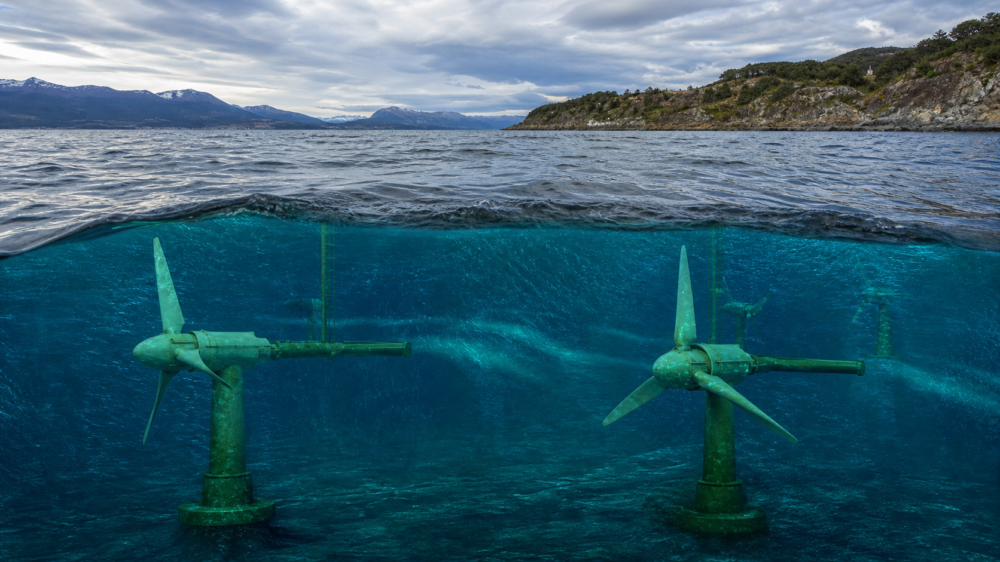

¿Qué es?

La energía mareomotriz aprovecha el ascenso y descenso de las mareas generado por la atracción gravitacional de la Luna y el Sol sobre los océanos. Este movimiento cíclico del agua posee energía cinética (en movimiento) y potencial (por la diferencia de altura), que puede convertirse en electricidad mediante turbinas sumergidas o compuertas que atrapan el agua en diques.
Existen varios tipos de aprovechamiento mareomotriz. Las presas de marea (tidal barrage) funcionan como represas que atrapan agua en un estuario durante la pleamar y la liberan durante la bajamar, haciendo pasar el agua por turbinas. Los generadores de corriente de marea (tidal stream) son turbinas submarinas similares a aerogeneradores que aprovechan las corrientes generadas por las mareas. La energía undimotriz captura la energía de las olas superficiales, y la maremotérmica aprovecha la diferencia de temperatura entre la superficie y las profundidades del océano.
Un factor clave es la amplitud de marea, es decir, la diferencia de altura entre la pleamar (marea alta) y la bajamar (marea baja). Cuanto mayor es la amplitud, mayor es el potencial energético. Las mejores ubicaciones del mundo tienen amplitudes superiores a los 5 metros.
Laboratorio interactivo
Parque mareomotriz en 3D
Recorré un parque de turbinas submarinas y seguí el circuito de la electricidad desde las corrientes de marea hasta la población costera. Podés observar las turbinas, la red eléctrica, el paisaje y los animales desde diferentes puntos de vista.
Modelo educativo: la escena representa un sistema de generadores de corriente de marea. Es una recreación conceptual y no corresponde a una instalación real de la costa argentina.
Usos
El uso principal de la energía mareomotriz es la generación eléctrica mediante plantas mareomotrices. A nivel mundial, las plantas más importantes son:
- ▸La Rance (Francia, 1966): Primera planta mareomotriz del mundo, con 240 MW de potencia. Opera desde hace más de 50 años y sigue funcionando.
- ▸Sihwa Lake (Corea del Sur): La más grande del mundo con 254 MW de potencia, construida sobre un lago artificial.
- ▸Proyectos en Escocia y Canadá: Desarrollo de turbinas de corriente de marea en el norte del Reino Unido y la Bahía de Fundy (Canadá), donde se registran las mareas más grandes del mundo.
En Argentina, la mareomotriz se encuentra en etapa experimental y de investigación. No existen plantas comerciales en funcionamiento, pero hay proyectos de estudio en la costa patagónica, especialmente en la provincia de Santa Cruz.
Rendimiento
La eficiencia de conversión de las plantas mareomotrices ronda el 30-40%, dependiendo del tipo de tecnología y las condiciones del sitio. Aunque no es particularmente alta, su gran ventaja es la predictibilidad: a diferencia de la energía solar o eólica, las mareas pueden calcularse con total precisión con siglos de anticipación, lo que facilita la planificación del sistema eléctrico.
El factor de capacidad (producción real respecto de la máxima teórica) es de aproximadamente 25-35% para generadores de corriente de marea y 20-30% para presas de marea. Si bien estos valores parecen bajos, la generación es constante y predecible: las mareas ocurren dos veces al día sin excepción.
El principal desafío económico es el costo de instalación, que es muy alto comparado con otras renovables. Sin embargo, los costos operativos y de mantenimiento son bajos una vez construida la infraestructura.
Lugar en Argentina
La costa atlántica de Santa Cruz y Tierra del Fuego presenta las mayores amplitudes de marea del país, con condiciones comparables a las de los sitios mareomotrices más exitosos de Europa. Los lugares más destacados son:
- ▸Río Gallegos: Amplitudes de marea superiores a los 10 metros, uno de los valores más altos de Sudamérica. Es el sitio con mayor potencial del país.
- ▸Ría Deseado y San Julián: Estuarios con amplitudes de marea significativas, en etapa de estudio por universidades y organismos de ciencia.
- ▸Bahía de San Sebastián (Tierra del Fuego): Sitio con potencial identificado, con amplitudes de marea relevantes.
El CONICET y la Universidad Nacional de la Patagonia Austral han realizado estudios de prefactibilidad en la región, analizando las condiciones oceanográficas, el impacto ambiental y la viabilidad técnica de posibles proyectos mareomotrices.
En la matriz energética
La energía mareomotriz representa actualmente casi el 0% de la matriz eléctrica argentina. No existen proyectos comerciales en operación ni en construcción. Se la considera una tecnología de "frontera" para el país, aún en etapa de investigación y desarrollo.
Tanto el gobierno nacional como el gobierno de la provincia de Santa Cruz han manifestado interés en desarrollar el recurso mareomotriz. Se estima un potencial técnico de aproximadamente 50 a 100 MW solo en la costa de Santa Cruz, aunque esta cifra podría ser mayor si se considera toda la costa patagónica.
Implicancia real
Argentina es uno de los países con mayor potencial mareomotriz de Sudamérica, gracias a las enormes amplitudes de marea de la costa patagónica. Sin embargo, la tecnología mareomotriz no es una prioridad en la política energética nacional frente a la eólica y la solar, que son más maduras tecnológicamente y más económicas en la actualidad.
La principal ventaja comparativa de la mareomotriz es su alta predictibilidad: mientras que la generación solar y eólica dependen del clima, las mareas son perfectamente predecibles. Esto la hace ideal para complementar la intermitencia de otras renovables en un sistema eléctrico diversificado.
El desarrollo de la energía mareomotriz en Argentina depende de dos factores: la reducción de costos de la tecnología a nivel global y la implementación de políticas de incentivo específicas. El proyecto "Energía Mareomotriz en la Ría de Río Gallegos" se encuentra actualmente en etapa de estudio, sin fecha estimada de construcción.
Ventajas y desventajas
Ventajas
- Predecible: se conoce con siglos de anticipación
- Constante: 2 ciclos diarios sin excepción
- Alta densidad energética del agua (más densa que el aire)
- Larga vida útil (75-100 años para presas)
- Baja emisión visual (infraestructura subacuática)
Desventajas
- Costo de instalación muy alto
- Pocos sitios con amplitud de marea suficiente
- Impacto en ecosistemas marinos (presas alteran el flujo)
- Tecnología menos madura que solar o eólica
- Mantenimiento en ambiente marino salino es caro